MEET THE TEAM
Prof. Michael Davidson
I am an assistant professor in the School of Global Policy and Strategy and the Mechanical and Aerospace Engineering Department at the University of California, San Diego. I study the engineering implications and institutional conflicts inherent in deploying low-carbon energy at scale. See my research areas and papers for more details.
I am a faculty member with the 21st Century China Center (where I run a project on Chinese energy markets with the China Data Lab), the Center for Commerce and Diplomacy, and the Japan Forum for Innovation and Technology, all located at UC San Diego. I am currently a fellow with the Public Intellectuals Program at the National Committee on U.S.-China Relations and the Initiative for Sustainable Energy Policy at Johns Hopkins SAIS. I am an affiliate with the UC Institute on Global Conflict and Cooperation.
Previously, I was a post-doctoral research fellow in the Harvard Kennedy School’s Belfer Center for Science and International Affairs, and received my Ph.D. in engineering systems and an S.M. in technology and policy from the MIT Institute for Data, Systems, and Society, where I was a researcher with the MIT Joint Program on the Science and Policy of Global Change. Prior to MIT, I worked for the Natural Resources Defense Council and was a Fulbright fellow in the Tsinghua University Department of Energy and Power Engineering. I received bachelors degrees in Mathematics and Physics and in Japanese Studies from Case Western Reserve University.
My office locations:
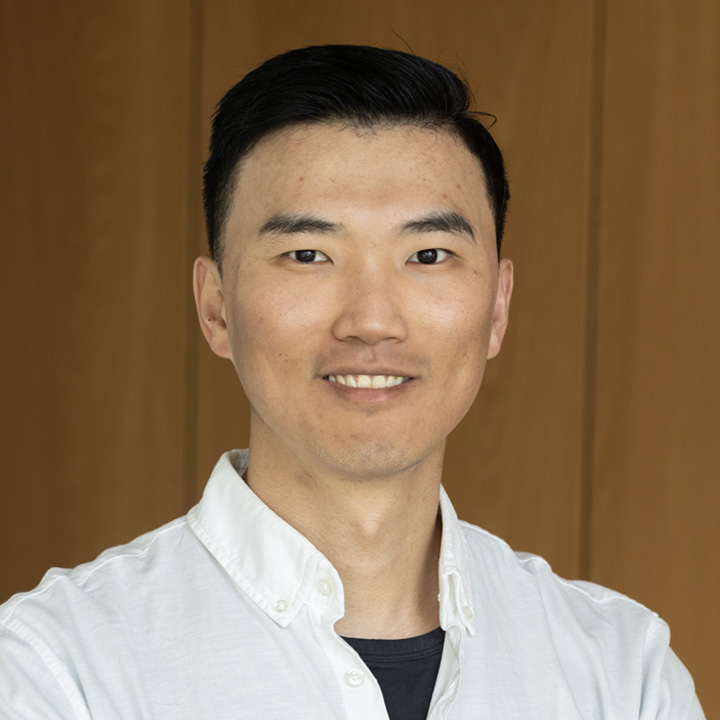
Dr. Ming Wei
Ming is a postdoctoral researcher in the School of Global Policy and Strategy at the University of California San Diego. Ming’s research interests focus on electricity markets, low-carbon transitions, green finance, and financial econometrics. Ming is currently working on a project to investigate China’s grid resource adequacy and to support China’s low-carbon policies on crucial power sector reform decision-making.
Ming holds a Ph.D. in Actuarial Studies and Business Analytics at Macquarie University (Australia). Ming’s doctoral dissertation is an interdisciplinary study of the renewable transformation of electricity markets in changing environments. Prior to his Ph.D., Ming earned two Master’s degrees—M.Phil. in Electrical and Electronic Engineering from the University of Hong Kong (Hong Kong, China) and M.Sc. in Electrical Power Systems from Bath University (the United Kingdom). Ming obtained his bachelor’s degree in Electrical Engineering from Tianjin University (China).
Before joining Davidson’s lab, Ming previously worked as research fellow in the Fintech Center of Zhejiang Lab, where Ming developed models to analyze fintech’s impact on green finance and decarbonization. Apart from that, Ming worked as an analyst at the headquarters of China Light and Power Co., Ltd. Ming also has participated in the consulting and research projects with China Southern Power Grid, Research Grants Council of the Hong Kong Special Administrative Region, and the National Key Research and Development Program of China with the topics of electricity markets, smart grid, and energy internet.
Dr. Quan Zou
Dr. Quan Zou is an interdisciplinary legal scholar specializing in law and society, law and public policy, legal consciousness, and labor rights. Focusing on the rights and resistance of Chinese workers, her doctoral research aimed to unravel the complexities of labor dynamics in China from a socio-legal perspective. Currently, she investigates the impact of China’s energy transition on its workforce as the nation moves towards carbon neutrality. Additionally, she explores the intersection of climate and environmental policy within China’s evolving economic and political landscape.
Quan earned her LL.M. and a Master of Comparative Law from the University of Southern California, and she holds a Ph.D. in Law from the University of Hong Kong. Prior to joining the Power Transformation Lab, she served as an assistant professor at Wenzhou-Kean University’s College of Business and Public Management in China, where she taught Business Law.
Shiny Choudhury
Shiny is pursuing a Ph.D. in Mechanical and Aerospace Engineering at UCSD. She is co-advised by George Tynan and Michael Davidson, with whom she explores decarbonization pathways under various technological and market contexts. Shiny has a background in power and energy system modeling, controls, and AI/ML. She holds an M.Sc from UC Irvine, working in the Advanced Power and Propulsion Lab (APEP), exploring hydrogen combustion for stationary burners. In her free time, Shiny enjoys yoga, kickboxing, running, or being in the waters at Scripps pier!
Manh (Tyson) Dao
Tyson is pursuing a Ph.D. in Mechanical and Aerospace Engineering, with a focus on Energy Systems at UCSD. He has a keen interest in sustainable development, climate change and renewable energy. His current research involves combining engineering and political-economic principles to better understand global energy trends. In particular, he’s interested in Vietnam’s energy transition and its implication in the broader ASEAN context. In his free time, Tyson enjoys working out, playing his guitar and going on road trips.
Jenny Nicolas
Jenny is pursuing a Ph.D. in Materials Science and Engineering at UCSD. She is interested in advancing renewable energy penetration by examining energy storage technologies at both device and system levels. Prior to joining the Davidson Lab, she worked as a project manager in commercial and utility-scale solar development. Jenny earned an integrated Master’s degree in Chemistry from the University of Edinburgh (Scotland), where the focus of her thesis was phase change materials for heat storage batteries. In her free time, Jenny enjoys running, eating desserts and watching documentaries.
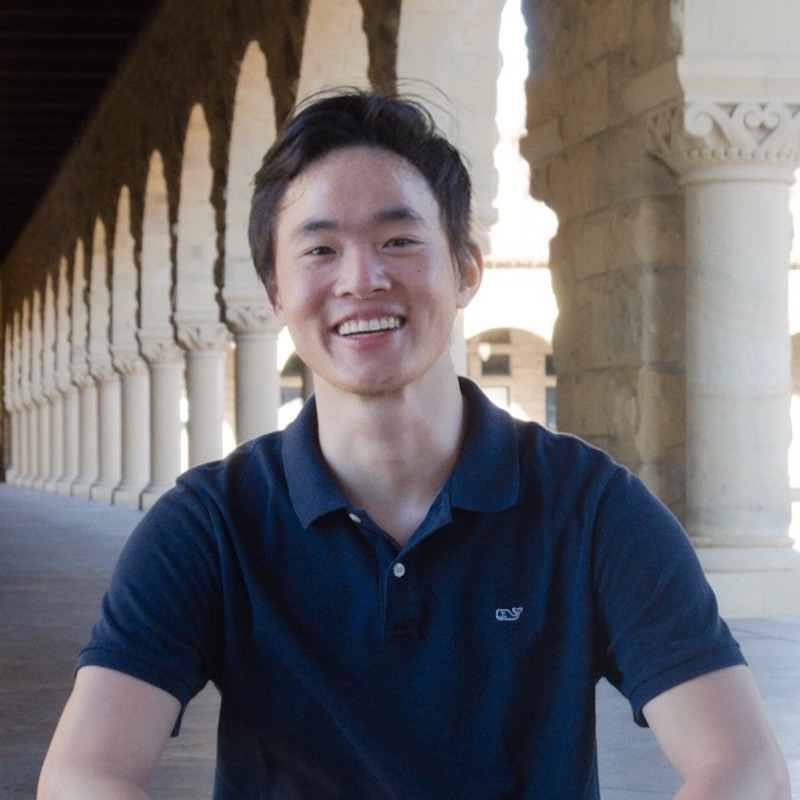
Zhenhua Zhang
Zhenhua is a Ph.D. student in Mechanical and Aerospace Engineering at UC San Diego with a focus on policy questions relevant to electricity markets and energy systems. He combines engineering methods with the understanding of political economy to identify the transition strategies towards carbon neutrality. His previous research focuses on the operational details of renewable energy technologies and the economic and financial aspects of behind-the-meter renewable projects. Zhenhua has worked on battery storage at Tesla and startups for a couple of years, where he developed software apps for system-level simulations and real-time controls of commercial and industrial battery storage projects in California and China. Zhenhua holds an M.S. in Civil and Environmental Engineering from Stanford University, a B.S. in Environmental Science, and a minor in Economics from Fudan University.
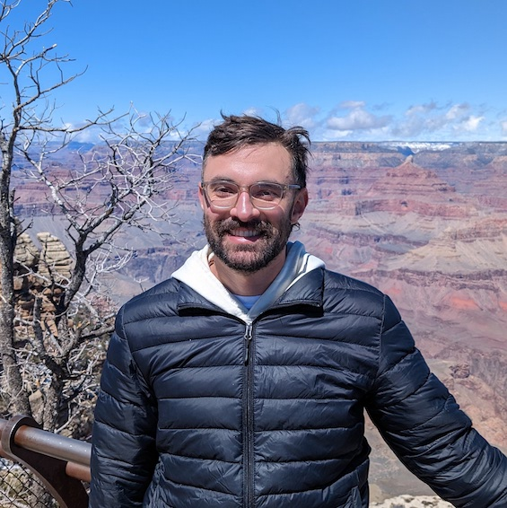
Nathan Mariano
Nathan is a PhD Candidate in the Department of Political Science at UC San Diego. His research investigates the behavior and preferences of private sector actors such as firms and consumers in the realm of climate policy. Nathan holds an MA in International Relations from the University of Chicago and has worked extensively as an instructor with the UC San Diego School of Global Policy & Strategy.
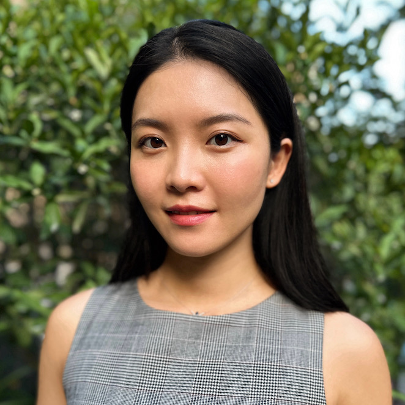
Hanyi Wang
I am a Ph.D. Candidate in Economics at UC San Diego. My research leverages causal inference techniques to assess the cost-effectiveness, distributional consequences, and broader trade implications of climate policies on firms. Additionally, I delve into understanding the impact of sustainable investing on businesses and how regulatory pressures can drive green transitions. Prior to this, I earned an MPhil in Land Economy Research from the University of Cambridge and a B.S. in Applied Math from UC San Diego.
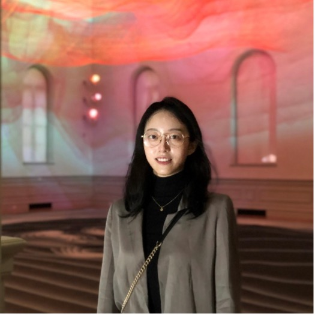
Ziying Song
Ziying is an incoming PhD student in Mechanical and Aerospace Engineering at UCSD in the Energy Systems track. Her research focuses on leveraging power system modeling tools and political-economic analysis to drive efficient, equitable, and forward-thinking energy transitions across China and its key counterparts. Ziying holds a master’s degree from Johns Hopkins University and brings working experience from China and international NGOs. In her free time, Ziying enjoys swimming, sleeping, and doing all kinds of interesting things.
Zhuohan Fang
Zhuohan is a Master of Chinese Economic and Political Affairs in the School of Global Policy and Strategy at UCSD with a specialization in Chinese Environment. Her interest lies in the international energy trade market and climate adaptation policy. Zhuohan holds a bachelor’s degree in agricultural economy management from Zhejiang University. Prior to UCSD, she worked as a research assistant in several projects related to international trade and ecosystem evaluation. In her free time, she enjoys hiking, cooking, and reading novels.
Kaarthi Gnapathy
Kaarthi is pursuing a Master of Science in Mechanical and Aerospace Engineering, majoring in Power & Energy Systems at UCSD. He is interested to explore the energy markets in the Southeast Asian region and develop an energy systems model that could help navigate through regional challenges in the energy transition. He holds a B.S. in Mechanical Engineering, and a minor in Economics from Purdue University. In his free time, Kaarthi enjoys cooking, drone photography and going on road trips.
Yumeng Liu
Yumeng is pursuing a Master of Public Policy in the School of Global Policy and Strategy at UCSD. She is interested in climate change and environmental policy and the policy impacts. Yumeng holds a Bachelor of Laws from Peking University. Prior to UCSD, she interned in several environmental NGOs.
Angelina Zhang
Angelina is a second-year UCSD student majoring in Data Science and Math-CS. She is interested in machine learning and data analysis. She has experience in data collecting and web scraping in projects. In her free time, Angelina enjoys playing badminton, playing video games, and hanging out with her friends.
Annabelle Min
Annabelle is a senior undergraduate student at UCSD majoring in Math-CS, Annabelle’s research primarily centers around the renewable energy transition in India and the coordination of Google Earth Engine with geodata package. With experience in machine learning, computer vision, and LLM, she is dedicated to advancing her field. Annabelle never fails to appreciate the breathtaking La Jolla sunset.
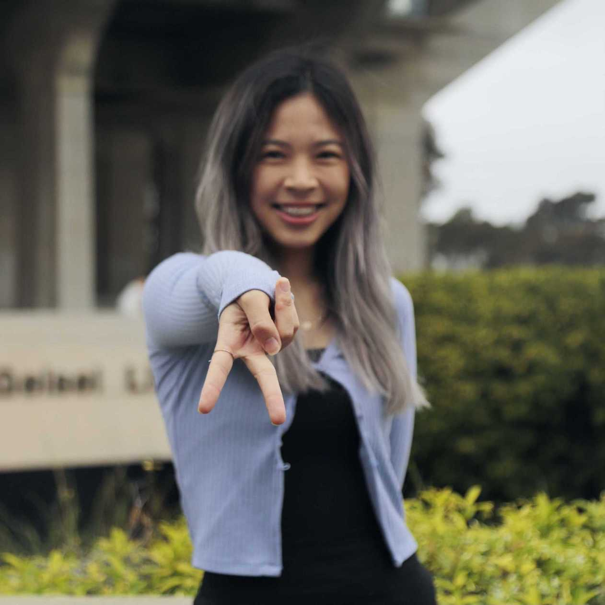
Connie Chang
Connie is a fourth year Mathematics-Computer Science and Cognitive Science (with a Specialization in Machine Learning and Neural Computation) double major at UCSD. She’s interested in leveraging her background in Computer Vision and Machine Learning towards improving the lives of humans. At Davidson Lab, she works on the Geodata project, developing the CI pipeline and wind interpolation/extrapolation functionality. In her free time, she enjoys dancing and playing video games.
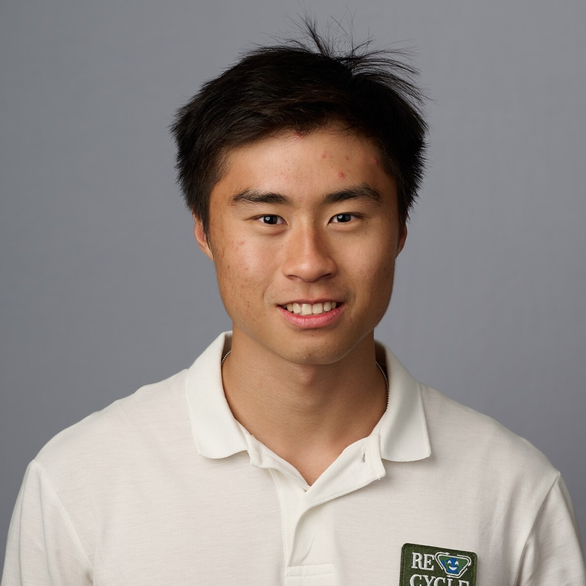
Jack Kai Lim
I am a third year international student from Malaysia! Majoring in Data Science with a Minor in Math. At the Power Lab I am working with Jenny Nicolas on the Solar NIMBY Project, assisting her with visualizing spatial data, performing robustness checks and creating models to help with understanding the social effects on Solar Panel construction. In my free time I love to go swimming, running or Rock Climbing, but if I am in my room I am probably paying video games!
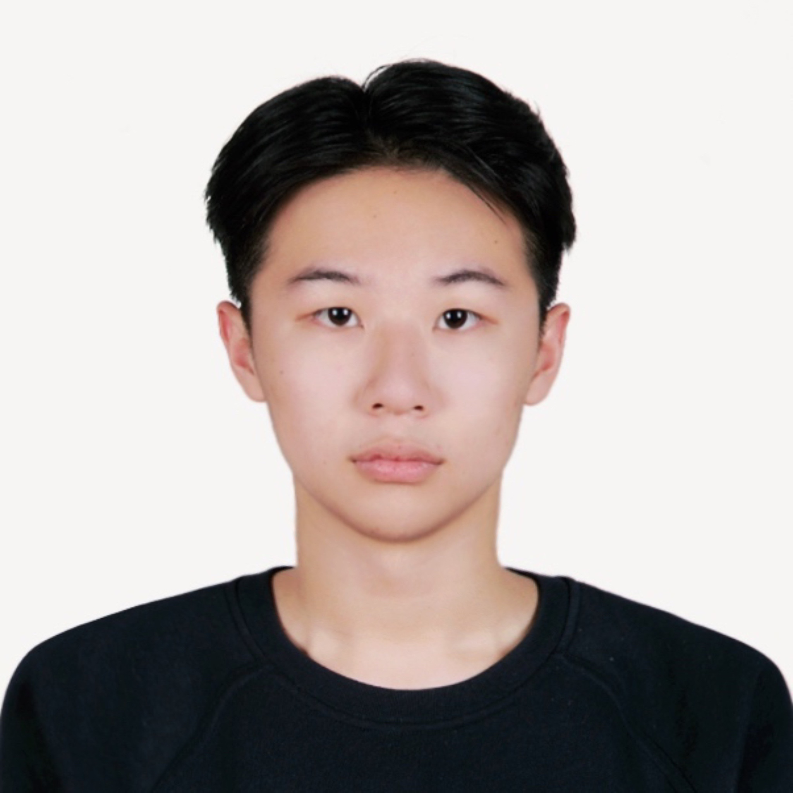
Licheng Hu
Licheng is an incoming first-year master’s student in Data Science. He is interested in machine learning, applying large language models as agents, and natural language processing. At Davidson Lab, he collaborates with Dr. Ming Wei on China Power Grid research, focusing on collecting and analyzing data related to power usage policy in China.
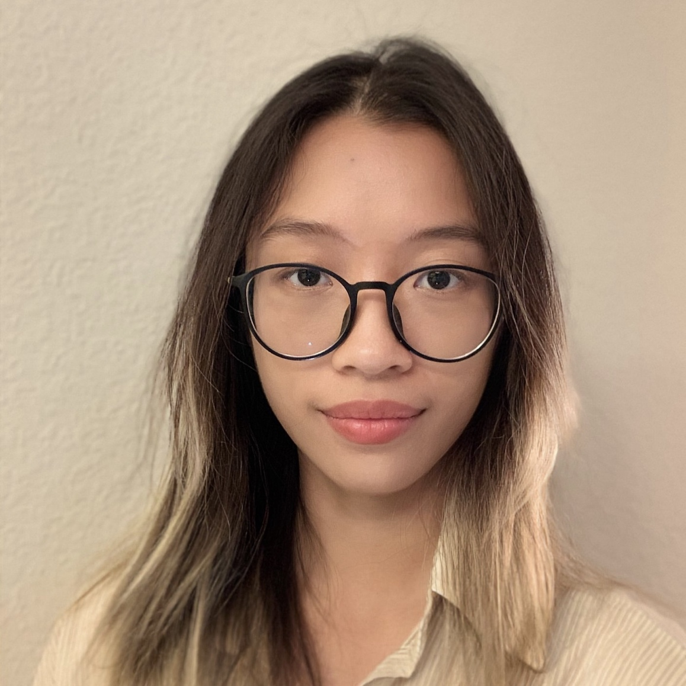
Lu Tong
Lu Tong is a fourth-year undergraduate student majoring in Economics and Critical Gender Studies. She has experience in econometrics and programming and is currently working on a project focusing on clean energy trade between India and China. She is interested in using quantitative methods to explore public policy, especially in the context of the labor market.
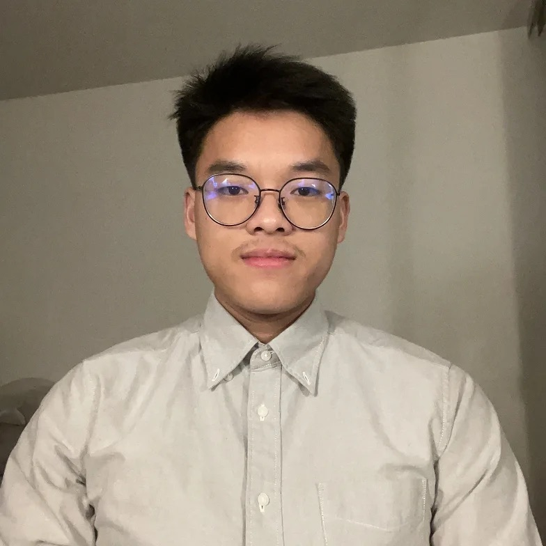
Lucien Chen
Lucien is a third year undergraduate student at UCSD majoring in Probability & Statistics with interests in utilizing statistics and data science for social good. At Davidson Lab, he works on helping to collect and analyze data for energy system development in Southeast Asia. In his free time, he enjoys working out and exploring the food scene in San Diego.
Micah Gilbert
I’m a third-year math major at UCSD and an aspiring web developer. I collaborated with Professor Davidson early 2023 to redesign the lab’s website, which you are looking at right now. You can check out my GitHub page here.
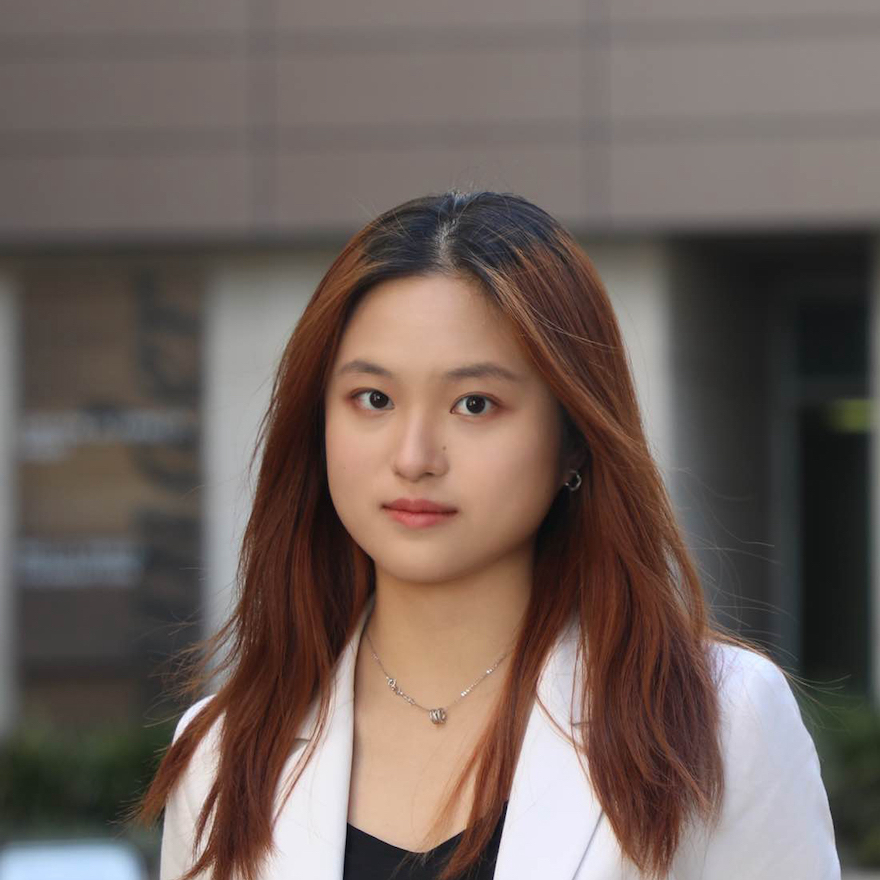
Nan Huang
Nan is a fourth-year undergraduate student double majoring in Data Science and Math Econ. She is passionate about applying machine learning tools to interdisciplinary fields, particularly text analysis. Nan is currently collaborating with the San Diego Supercomputer Center to develop a comprehensive organizational scheme that streamlines and catalogs data workflows for all projects. Outside the lab, Nan enjoys exploring new restaurants, cooking recipes, and different types of music.
Dr. Hongyu Zhang
Hongyu is a visiting scholar in the School of Global Policy and Strategy at the University of California San Diego and a postdoctoral researcher at Tsinghua University (China). Hongyu’s research interests include energy economy, energy policy and power system transformation in China. Hongyu’s current research concentrates on the integration of renewables in power system considering flexible resource requirements.
Hongyu holds a Ph.D. in Management Science and Engineering at Tsinghua University. Hongyu’s doctoral dissertation is focus on the influence of China’s national emission trading system on the power system and its interaction with renewable portfolio standard policy. Prior to her Ph.D., Hongyu earned her bachelor’s degree in Electrical Engineering from Tsinghua University.
Since her Ph.D., Hongyu has learned and extended a regional capacity expansion model for China to analyze the decarbonization of China’s power system and the influence of energy and climate policy. She has also participated in the consulting and research projects from government, National Natural Science Foundation of China, the State Grid, China Three Gorges Corporation, and the International Energy Agency on the topics of renewables, electricity markets, and climate policies.
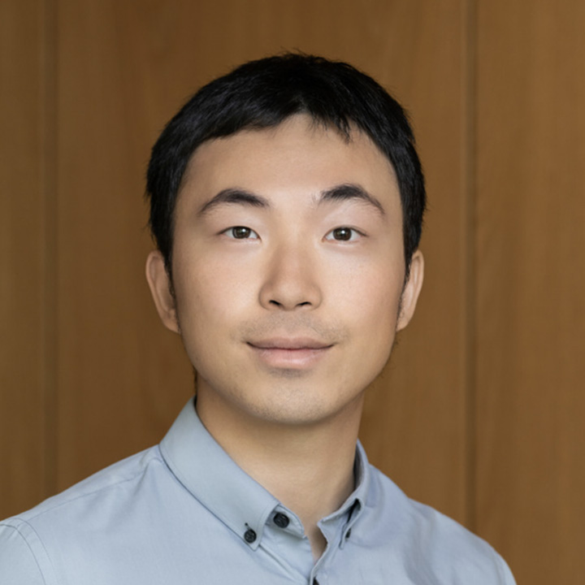
Ruibin (Ian) Deng
Ruibin Deng is a visiting graduate at UCSD this year and he is pursuing a Ph.D. in Public Policy, with a focus on decarbonization policies at Sun Yat-Sen University. He also holds interest in industrial policies, energy transition and policies as well as urban governance. In particular, he is currently working on the political-economic analysis of carbon market governance in China. In his free time, Ian enjoys road trips and outdoor activities such as climbing and trail running.
Yiqun Meng
Yiqun Meng is a visiting graduate at UCSD this year and he is pursuing his Ph.D. in Electrical Engineering at Northeast Electric Power University, with a focus on Energy Economics and Policy. His current research is centered around the optimized operational strategies of multi-energy systems (wind-solar-thermal) participating in the electricity market. Yiqun earned a Master’s degree in Power Engineering from the University of Sydney (Australia), where the focus of his thesis was the impact of distributed renewable energy generation on energy saving and carbon reduction in residential areas. In his free time, Yiqun enjoys photography, skiing, and going on road trips.
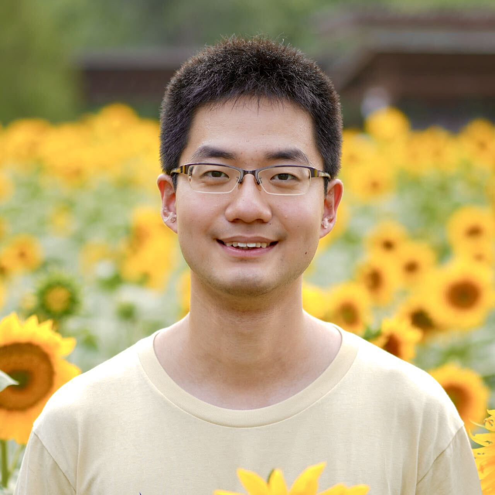
Jiacong Li
Jiacong is a visiting scholar in the School of Global Policy and Strategy at UC San Diego. He is pursuing a Ph.D. in environmental science and engineering in Tsinghua University. Jiacong’s study focus on energy system decarbonization with carbon capture, utilization and storage (CCUS) technology. His previous work analyzes the synergies of flexibly-operated carbon capture power plants and variable renewable energy in large-scale power system, using an improved unit commitment model. In his future work, he is going to explore the possibility of decarbonizing chemical industry with electric heater, renewable energy as well as flexible CCUS. Jiacong holds a Bachelor of Engineering and a Bachelor of Philosophy from Tsinghua University.
Alumni
- Zhipeng (Bill) Chen
- Eddie Yang
- Chen (Pammy) Long
- Yuting (Christine) Wan
- Jingting Liu
- Xiqiang Liu
- Nikki Emam
- Dr. Fikri Kucuksayacigil
- Zecheng (Justin) Li'
- Dinah Shi
- Boyu Yao
- Shasank Bonthala
- Jiahe (Jeffrey) Feng
- Chi (Will) Gao
- Isac Lee
- Justin Lu
- Johnny Nguyen
- Yuanbo (Rambo) Shi
- Arjun Sawhney
- Huizhong (Sonia) Tan
- Ananya Thridandam
- Yunhan Zhang